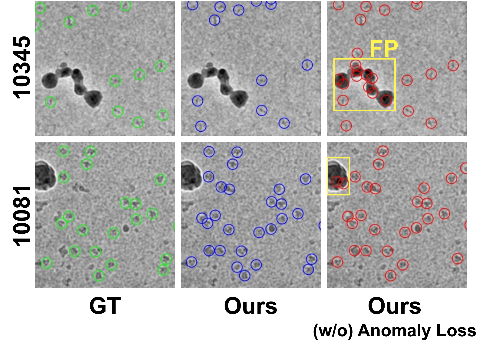
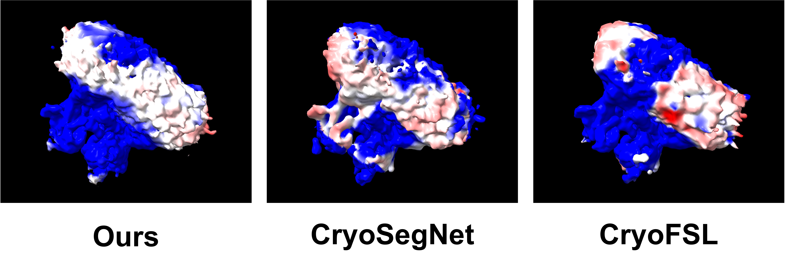

CryoAnomaly
Few-Shot Cryo-EM Particle Picking via Anomaly-Guided Hard Negative Suppression
1Keio University, Yokohama, Japan
2Keio AI Research Center, Yokohama, Japan
3Carnegie Mellon University, Pittsburgh, USA
Cryo-electron microscopy (cryo-EM) is crucial for analyzing 3D biological structures, in which automated particle picking is essential for the workflow. However, fully supervised methods require extensive manual annotations. While few-shot learning offers a potential solution, existing approaches struggle to handle the diverse contaminations inherent in real micrographs owing to insufficient negative supervision, resulting in false positives that degrade the quality of the 3D reconstruction. Although synthetic data provides abundant and perfect labels, their use has primarily been restricted to validating identical proteins or augmenting full-shot training, leaving the potential for few-shot adaptation to novel proteins unexplored.
In this study, we investigate the effective utilization of synthetic data for few-shot particle picking. We identify that direct transfer fails due to a “clean-vs-contaminated” Sim2Real gap. To overcome this, we propose CryoAnomaly, a framework that turns this gap into an advantage. By employing an anomaly detector trained on clean synthetic data, we identify real-world contaminants as anomalies and suppress them via a novel anomaly-guided hard negative suppression loss.
On the CryoPPP benchmark, CryoAnomaly achieves the best picking accuracy and reconstruction resolution among state-of-the-art methods in the few-shot setting. The proposed anomaly-guided loss is confirmed to be effective on datasets with diverse contamination, where reliable pseudo-anomaly masks can be generated.
1-shot comparison on five CryoPPP datasets under the same target-domain annotation budget. Baselines are reported as mean±standard deviation; CryoAnomaly is deterministic and evaluated once. Best results in bold, second-best underlined. Resolution: 3-trial average GSFSC (Å).
| Method / EMPIAR-ID | 10081 | 10093 | 10345 | 10532 | 11056 | AVG |
|---|---|---|---|---|---|---|
| Precision (↑) | ||||||
| crYOLO | 0.592±0.185 | 0.356±0.231 | 0.523±0.285 | 0.262±0.153 | 0.183±0.161 | 0.383 |
| Topaz | 0.180±0.010 | 0.227±0.008 | 0.056±0.003 | 0.384±0.028 | 0.353±0.016 | 0.240 |
| CryoSegNet | 0.601±0.086 | 0.365±0.054 | 0.423±0.179 | 0.522±0.042 | 0.576±0.030 | 0.497 |
| CryoFSL | 0.329±0.027 | 0.181±0.025 | 0.138±0.024 | 0.244±0.059 | 0.276±0.012 | 0.234 |
| CryoAnomaly (Ours) | 0.717 | 0.366 | 0.526 | 0.574 | 0.651 | 0.567 |
| Recall (↑) | ||||||
| crYOLO | 0.594±0.228 | 0.199±0.286 | 0.291±0.242 | 0.582±0.304 | 0.733±0.034 | 0.480 |
| Topaz | 0.922±0.107 | 0.967±0.030 | 0.746±0.140 | 0.917±0.077 | 0.795±0.137 | 0.869 |
| CryoSegNet | 0.722±0.078 | 0.381±0.050 | 0.512±0.155 | 0.334±0.170 | 0.636±0.046 | 0.517 |
| CryoFSL | 0.853±0.083 | 0.608±0.055 | 0.826±0.138 | 0.664±0.090 | 0.788±0.031 | 0.748 |
| CryoAnomaly (Ours) | 0.848 | 0.527 | 0.691 | 0.481 | 0.568 | 0.623 |
| F1 Score (↑) | ||||||
| crYOLO | 0.524±0.188 | 0.116±0.076 | 0.334±0.251 | 0.276±0.099 | 0.268±0.131 | 0.304 |
| Topaz | 0.300±0.011 | 0.367±0.010 | 0.104±0.004 | 0.539±0.019 | 0.485±0.030 | 0.359 |
| CryoSegNet | 0.654±0.076 | 0.367±0.019 | 0.415±0.112 | 0.384±0.126 | 0.603±0.025 | 0.485 |
| CryoFSL | 0.468±0.019 | 0.275±0.021 | 0.230±0.030 | 0.346±0.060 | 0.408±0.012 | 0.345 |
| CryoAnomaly (Ours) | 0.777 | 0.432 | 0.597 | 0.523 | 0.607 | 0.587 |
| Resolution (Å) (↓) | ||||||
| crYOLO | 10.57±0.08 | 22.81±4.58 | 55.88±39.55 | 14.06±8.75 | – | 25.83 |
| Topaz | 16.89±0.23 | 13.72±0.56 | 17.56±0.83 | 8.26±0.05 | – | 14.11 |
| CryoSegNet | 9.36±0.08 | 8.58±0.04 | 22.31±0.47 | 5.92±0.11 | – | 11.54 |
| CryoFSL | 8.83±0.10 | 8.65±0.05 | 17.38±0.21 | 5.78±0.27 | – | 10.16 |
| CryoAnomaly (Ours) | 8.68 | 8.06 | 16.26 | 4.85 | – | 9.46 |
| # Picked | ||||||
| crYOLO | 17,585±30,451 | 17,554±32,816 | 1,060±936 | 65,002±43,636 | 138,925±37,547 | 48,025 |
| Topaz | 48,986±3,008 | 49,051±2,064 | 47,343±2,697 | 56,336±6,373 | 60,884±11,765 | 52,520 |
| CryoSegNet | 10,561±1,214 | 12,073±3,369 | 4,330±3,658 | 14,091±7,421 | 29,806±2,817 | 14,172 |
| CryoFSL | 11,935±980 | 17,821±2,591 | 5,286±1,394 | 35,065±5,823 | 35,836±2,163 | 21,189 |
| CryoAnomaly (Ours) | 10,284 | 16,069 | 3,244 | 18,343 | 23,475 | 14,283 |
* 3D reconstruction parameters for EMPIAR-11056 were not available.
* crYOLO, Topaz, and CryoSegNet were originally proposed as fully supervised methods, whereas CryoFSL and CryoAnomaly are few-shot methods. We evaluate them in the common 1-shot setting for a fair comparison.

